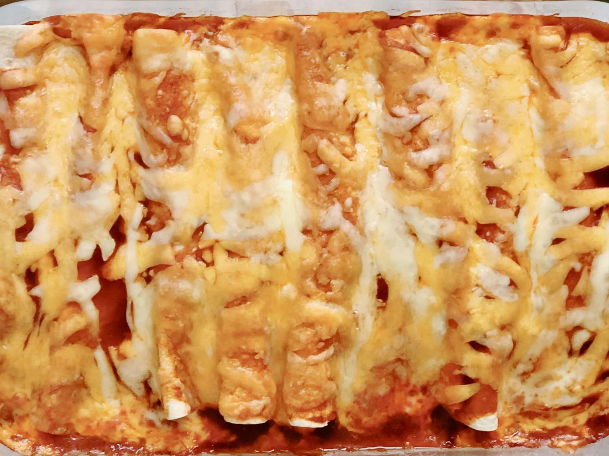

Cheese Enchiladas

Descrption:
Quick and easy cheese enchiladas!
Ingredients:
- 1 (15 ounce) can tomato sauce
- 1 (6 ounce) can tomato paste
- 2 teaspoons Creole-style seasoning
- 1 (12 ounce) package corn tortillas
- 1 (8 ounce) package Cheddar cheese, shredded, divided
- 1 onion, diced
- 1 (6 ounce) can sliced ripe olives
- 1 (6 ounce) can sliced mushrooms
Recipe:
- Preheat oven to 350 degrees F (175 degrees C).
- In a medium bowl combine tomato sauce, tomato paste and Creole-style seasoning.
- Warm tortillas in microwave, or in oven; dip them in the tomato sauce mixture and lay them in a 9x13 inch
casserole dish. Fill each tortilla with cheese, onion, olives and mushrooms; roll. Repeat until dish is
full. Sprinkle a small amount of cheese on top.
- Bake in preheated oven for 25 to 30 minutes, or until cheese is melted and bubbly.